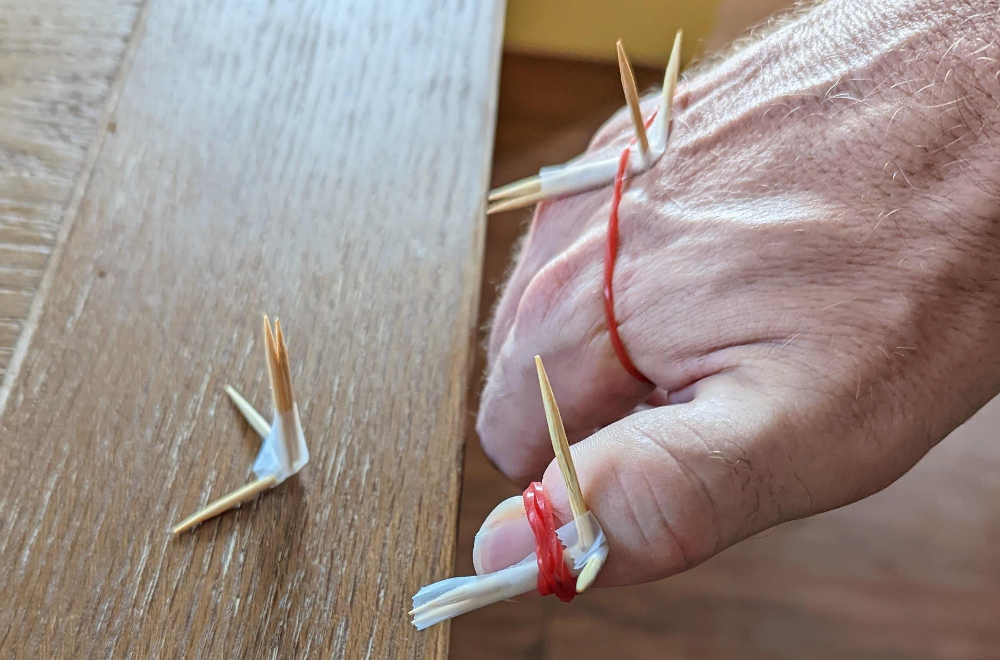
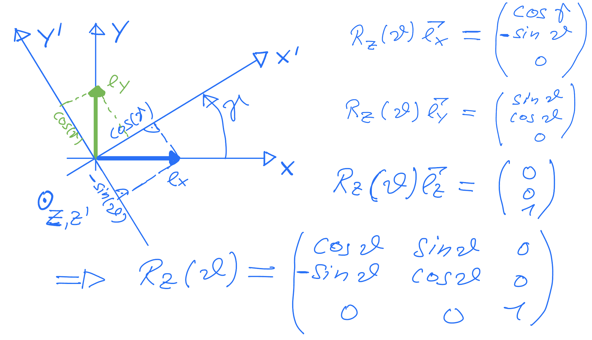
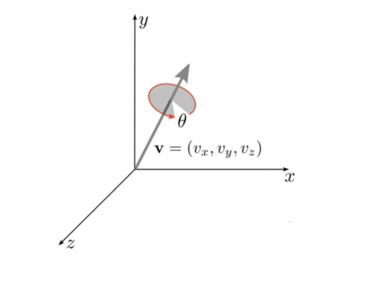

This is a primer on rotations and quaternions, as needed to describe rotations.
A short note on rotations
In the figure, you can see a sketch of the situation for gesture recognition. We are interested in “the relative positions” between the palm and thumb on the one side and the laboratory system. As we will see this can be described in the framework of rotations.

Figure 1: Simplyfied gesture recognition with 2 IMUs (thumb, palm). Show are a fixed coordinate system in space (toothpicks on table), a body centered coordinate system on the thumb and one on the plam.
A first rotation
Before we go into some math, lets have a first look how a rotation might look like. On the left side you see data points in the original space. On the right side a rotation by 45 degrees around the z-axis that have been applied to the points. This rotation can be obtained by a rotation matrix R:
Code
#dim(rabbit) #5000 3 A subsampled version of the standford buny with head up z-AxisR =matrix(c(0.7071068, 0.7071068, 0.0000000, -0.7071068, 0.7071068, 0.0000000, 0.0000000, 0.0000000, 1.0000000), nrow=3)round(R,4)
par(mfrow=c(1,2))p3d(rabbit, h=NULL, xlab='x', ylab='y', zlab='z', )#It's vector times Matrix for row-vectors#Therefore we have to transpose (R x) to x^T R^Tp3d(rabbit %*%t(R), h=NULL)
Left: orinial data. Right: data rotated by 45 degrees around y-axis (or coordinate system rotated by -45) degrees. The y-axis points up and the rotation is done in counter clock-wise manner
Code
par(mfrow=c(1,1))
Definition of rotations
Rotations between rigid objects can be described as a linear transformation from one coordinate system to another, with the same origin. A first example is the bunny from above. A practical example of such a rotation is the orientation of your cell phone after you picked it up compared to the position on the table, or the orientation of the thumb in figure. Another good example is a plane which is at \(t=0\) on the ground and at \(t=t\) in the air. Besides the translation, the orientation of the plane at \(t=0\) relative to the plane at \(t=t\) can be described by a different heading (the yaw angle) obtained while taxing, the pitch angle obtained in the climbing phase and a rotation around the axis of flight the roll angle. During this phase many rotations can happen but they can all be summarized in a single rotation.
More formally the rotations between the two planes can be described by a rotation matrix \(R\) , which transforms the coordinate system of the plane at \(t=0\) to the coordinate system of the plane at \(t=t\). This matrix is defined by the transformation of unit vectors \(\vec{e_x},\vec{e_y},\vec{e_z}\) of coordinate system (say that at \(t=0\)) to a coordinate system \(\vec{e'_x},\vec{e'_y},\vec{e'_z}\) at \(t=t\). As my famous professor in linear algebra always repeated the columns of a (transformation) matrix are the images of the unit vectors1. So the first column of \(R\) is given by \(R \cdot \vec{e_x}\) second by \(R \cdot \vec{e_y}\), and the third by \(R \cdot \vec{e_z}\).
Parameterization
Definition of rotations
Rotations can be seen as linear transformation from one coordinate system into another. There are several way to parametrize them. The first is via a rotation matrix.
Rotation matrix
In principal a rotation is given by the 9 matrix elements of \(R\). However they cannot be arbitrary, they still need to describe rotations. What are the defining properties of rotations? It turns out that a rotation, has an inverse and the inverse simply the transposed \(R^{-1} = R^T\) (this is the orthogonality). Further, \(det(R)=1\) this is a consequence that the volume in the rotated system stays constant and also the orientation (it’s \(det(R)=1\) and not just \(|det(d)|=1\)). So in matrix notation a rotation is defined by
Multiplying two rotation matrices \(R_1\) and \(R_2\) is a again a rotation matrix, this is why rotations in 3D are also called special orthogonal group SO(3). Note that the order of rotations matter and \(R_1 R_2 \ne R_2 R_1\)
So it’s obvious that is over parameterized using 9 values and there are constrains on the \(r_{ij}\) so that eq. 1 is fulfilled.
Parameterization using elementary rotation.
Many repeated rotation again form a rotations and it can be shown that an arbitrary rotation can be build out of three elementary rotations. First, a counter-clockwise rotation \(R_x(\alpha)\) around the \(x\)-axis by an angle of \(\alpha\). Second, \(R_y(\beta)\) rotates around “the new” \(y\)-axis and finally by \(R_z(\gamma)\) around the new \(z\)-axis. So the complete transformation is given by \(R(\alpha, \beta, \gamma) = R_z(\gamma) R_y(\beta) R_x(\alpha)\). The individual transformations can be derived by looking where the unit vectors are transformed, yielding e.g. for \(R_z(\gamma)\) to
In the figure below you see a derivation of the rotation matrix.

Derivation of the rotation matrix transforming from a fixed coordinate system to a rotated one.
The question is “how do the unit vectors look in the rotated system”. Note that this transformation matrix transforms from the laboratory system to the “body centric system”. Note that the inverse is the transpose and this corresponds to setting \(\gamma\) to \(-\gamma\) since \(\sin\) is asymmetric. For the initial rotation of the rabbit, we transformed the data and not the coordinate system hence, we have to use \(R^T\) (or change \(\gamma \to -\gamma\)) and with \(\sin(45^0) = \cos(45^0) \approx 0.7071\) we get same rotation as used in the code used to transform the data.
Connections with yaw, pitch, roll
Using the above definition, we can make the following connections (todo check)
The yaw angle is \(\gamma\)
The pitch is \(-\beta\)
The roll is \(\alpha\)
The problem with the approach of elementary rotations is that there is are many possible combinations to chain the elemetary operations. For example some use \(R_x(\gamma) R_y(\beta) R_x(\alpha)\) i.e. using \(R_x\) twice, some go from body to fixed some the other way. Further, in this parameterization the effect of changing the angles by a bit has different effects depending on the values. In the extreme case changing the angle does nothing anymore, which is known under the name gimbals look (see e.g. here for a nice demonstration).
Quaternions
Besides defining a rotation by 3 elementary rotations, with the many implied ambiguities and the gimbal lock there are other possibilities to describe rotations. Quaterions are such a possibility used as standard output format of many libraries such as AHRS. Rotations can be described by unit2 vector \(\vec{v}=(v_x,v_y,v_z)\) and a counter clock wise rotation around this vector by an angle \(\theta\).

Figure 2: Rotation around a vector
Quaternions are objects which consists of 4 numbers, and the rotation around a vector can be nicely described with them as we will see in a second. But they also have some mathematical raison d’etre.
Definition of Quaternions
Complex numbers \(|a|e^{i \theta}\) describe points in the real / imaginary space and rotations in 2D can be nicely described by them using multiplications. Quaternions can be seen as a generalization of complex numbers with two more imaginary like units \(i,j,k\). Using these, the quaternion can be written as:
\[
q = (q_w, q_1, q_2, q_3) = q_w + q_1 i + q_2 j + q_3 k
\]
Here, we are dealing with quaternions of length 1 and almost all quaternions used in Computergraphics are unit quaternions or a.k.a. rotation quaterions.
Geometric Representation
For quaternions \(q = (w, r_1, r_2, r_3)\) they following connection to the unit rotation vector \(\vec{r}=(v_1, v_2, v_3)\) holds:
\[
q(\theta, v) = \cos(\frac{\theta}{2}) w + i \sin(\frac{\theta}{2}) v_1 +
j \sin(\frac{\theta}{2}) v_2 + k \sin(\frac{\theta}{2}) v_3 = \\\left(\cos(\frac{\theta}{2}) w,\; \sin(\frac{\theta}{2}) v_1, \;\sin(\frac{\theta} {2}) v_2, \;\sin(\frac{\theta}{2}) v_3 \right)
\]
here \(\theta\) is the rotation about the unit vector.
The length of \(q\) is \(||q||=\cos^2(\theta/2) w + \sin^2(\theta/2) (v_1^2 + v_2^2 + v_3^2) = \cos^2(\theta/2) w + \sin^2(\theta/2)\) and hence we need to choose \(w=1\) for the unit quaternion.
Construction of quaternion from vector and angle
Consider the plane from above. At the start (\(t=0\)) the laboratory coordinate system corresponds to the one in the plane. This can be described by no rotation \(\theta=0\) about any axis \(q(0) = (\cos(0), v_1 \sin(0), v_2 \sin(0), v_3 \sin(0) = (1,0,0,0)\). Then before the liftoff it looks in the xy-direction, that is a rotation about 45 degres (\(\theta = 45/360 \cdot 2 \cdot pi \approx 0.785\)) around \(\vec{r} = (0,0,1)\) and \(q(1) = (\cos(0.785/2), 0, 0, \sin(0.785/2))\).
Quaterion Algebra
Addition (easy but no geometeric interpretation), just for reference \[
q + p = p + q = q_w + p_w + (q_1 + p_1) i + (q_2 + p_2) j + (q_3 + p_3) k
\]
Multiplication: The multiplication is not commutative \[
q * p \ne p * q = \tt{Complicated Formula}
\]
Conjugate (just i –> -i same for j and k) \[
q^* = q_w − i q_x − j q_y − k q_z
\]
Inverse \[
q^{-1} = q^*/||q||
\]
So for unit quaternions, you just have to conjugate to get the inverse. Luckily, we don’t have to remember the formulaes and can use the onion-package.
Chaining rotations with quaterions (just multiply them)
Now comes properly the most useful thing, that successive rotations can be done by multiplying the respective quaternions. Let’s try this out.
Let’s multiply several quaternions
Code
q0 = onion::quaternion(Re =1)p3d(bunny %*%quat_to_mat(q0), h=NULL, main ='q0')
Code
q1 =quaternion(Re=cos(-45/360*pi), i =0, j =1*sin(-45/360*pi), k =0) p3d(bunny %*%quat_to_mat(q0 * q1), h=NULL, main ='q0 * q1')
Code
q2 =quaternion(Re=cos(-45/360*pi), i =1*sin(-45/360*pi), j =0, k =0) q012 = q0 * q1 * q2p3d(bunny %*%quat_to_mat(q012), h=NULL, main ='q0 * q1 * q2')
Vector Quaterions (not sure if this word fits)
We can also use use quaterions to transform vectors, without the need to explicitly construct the rotation matrix as done with the bunny data above. In this case, we set the real part to 0 and use the vector in the vector part. That is a vector in a certain direction withgout doing the rotation.
vec_q =quaternion(Re =0, i = vec[1], j=vec[2], k=vec[3])#q^-1 is the inverse, which for rotation quaternions is the conjugate q * vec_q * q^-1
Re
Re -8.881784e-16
i -7.514719e+00
j 4.101219e+01
k 2.448528e+01
Code
#q^1 onion_inverse(q) #The inverse
Flight Coordinates from Quaterions (TODO)
Code
qx =quaternion(0,1,0,0) qx * q012 * qx^1
Re
Re 0.8535534
i -0.3535534
j -0.3535534
k -0.1464466
Rotation between two quaternions.
Consider the two IMUs, the orientation of the first (w.r.t. the laboratory system) is given by \(q_1\) the orientation of the second by \(q_2\). How are these related? Well the questions is then: which rotation \(q_{12}\) translates between them. So we ask which \(q_12\) fulfills
\[
q_2 = q_1 \; q_{12}
\]
Just calculate the inverse of \(q_1\) and you are done
\[
q_1^{-1} \; q_2 = q_{12}
\]
Constructing a rotation matrix from Quaterions
It’s possible to translate the quaternions back to a rotation matrix, see
Code
t_05 =0#half of theta q0_d =c(cos(t_05), sin(t_05), sin(t_05), sin(t_05)) t_05 =45/360* pi #half of theta q01 =c(cos(t_05), 0*sin(t_05), 0*sin(t_05), 1*sin(t_05))#sum(q01^2) #1quat_to_mat(q01)
The AHRS package (https://ahrs.readthedocs.io/en/latest/index.html) used to estimate the rotation of a IMUs (sensors in e.g. cell phones and drones), uses quaternion as lot and also provides some basic operations.